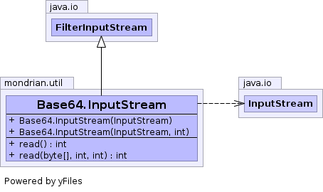

public static class Base64.InputStream extends FilterInputStream
Base64.InputStream will read data from another
java.io.InputStream, given in the constructor,
and encode/decode to/from Base64 notation on the fly.Base64
in| Constructor and Description |
|---|
Base64.InputStream(InputStream in)
Constructs a
Base64.InputStream in DECODE mode. |
Base64.InputStream(InputStream in,
int options)
Constructs a
Base64.InputStream in
either ENCODE or DECODE mode. |
| Modifier and Type | Method and Description |
|---|---|
int |
read()
Reads enough of the input stream to convert
to/from Base64 and returns the next byte.
|
int |
read(byte[] dest,
int off,
int len)
Calls
read() repeatedly until the end of stream
is reached or len bytes are read. |
available, close, mark, markSupported, read, reset, skippublic Base64.InputStream(InputStream in)
Base64.InputStream in DECODE mode.in - the java.io.InputStream from which to read data.public Base64.InputStream(InputStream in, int options)
Base64.InputStream in
either ENCODE or DECODE mode.
Valid options:
ENCODE or DECODE: Encode or Decode as data is read.
DONT_BREAK_LINES: don't break lines at 76 characters
(only meaningful when encoding)
Note: Technically, this makes your encoding non-compliant.
Example: new Base64.InputStream( in, Base64.DECODE )
in - the java.io.InputStream from which to read data.options - Specified optionsBase64.ENCODE,
Base64.DECODE,
Base64.DONT_BREAK_LINESpublic int read() throws IOException
read in class FilterInputStreamIOExceptionpublic int read(byte[] dest, int off, int len) throws IOException
read() repeatedly until the end of stream
is reached or len bytes are read.
Returns number of bytes read into array or -1 if
end of stream is encountered.read in class FilterInputStreamIOExceptiondest - array to hold valuesoff - offset for arraylen - max number of bytes to read into array